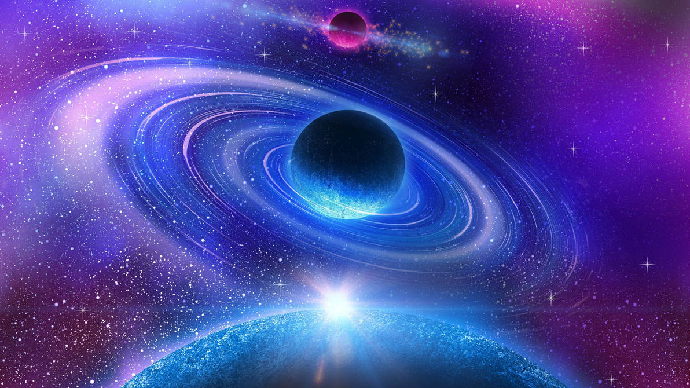

About This Project

I keep a weekly list of sky events, documentaries, and articles. This page explains the routine I follow to stay organized and consistent.
I use a simple checklist: pick one topic, capture one idea, and sketch one layout. It keeps the hobby fun and helps me practice CSS with real content.
Quick Checklist
- Pick a space topic for the week.
- Collect two or three references.
- Update the gallery captions.
- Check contrast with WAVE.